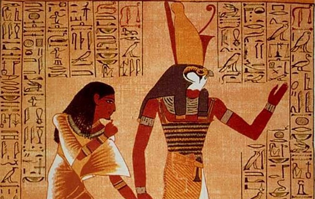

A mitologia egípcia reúne diversos mitos, lendas e estórias que fizeram parte do imaginário religioso no Egito Antigo até a chegada do Cristianismo.
Lembre-se que na Antiguidade a religião egípcia era baseada no politeísmo, ou seja, o culto a vários deuses que ocorriam geralmente nos templos dedicados a eles.
As lendas disseminadas tinham como temas, a origem do mundo, da natureza, dos homens e dos deuses. Elas explicavam fenômenos ainda desconhecidos pela ciência, sendo, portanto, de grande importância para a construção do imaginário dos egípcios.
Os egípcios antigos faziam rituais e oferendas aos deuses. Era uma forma de conseguirem agradar aos deuses, conseguindo ajuda em suas vidas. No Egito Antigo existiam diversos templos, que eram construídos em homenagem aos deuses. Cada cidade possuía um deus protetor. Outra característica importante da religião egípcia era a crença na vida após a morte. De acordo com esta crença, o morto era julgado no Tribunal de Osíris. O coração era pesado e, de acordo com o que havia feito em vida, receberia um julgamento.
